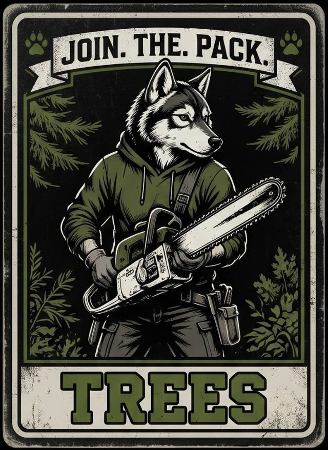
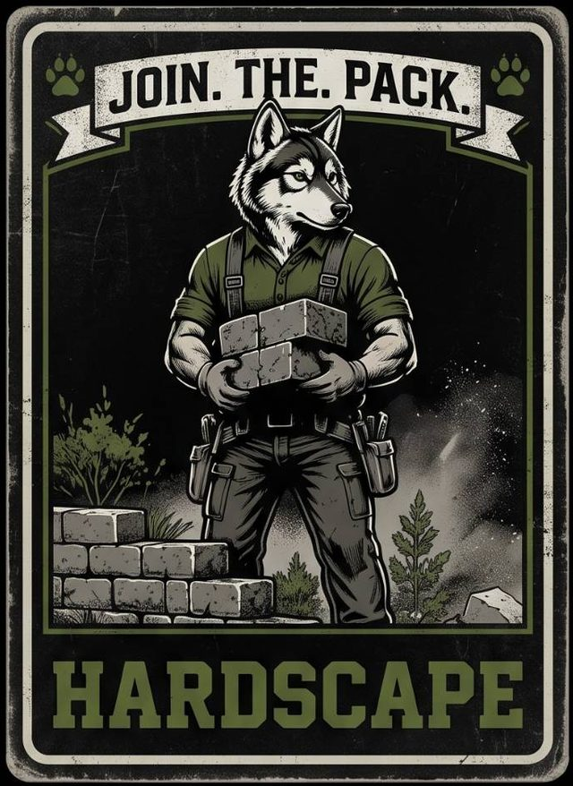
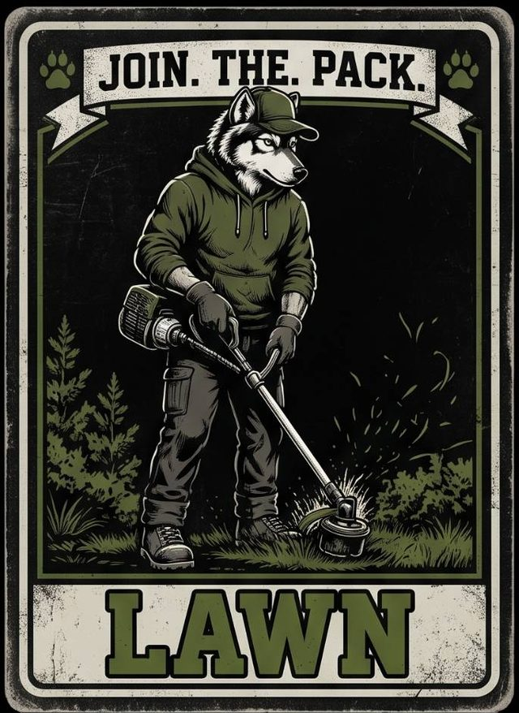
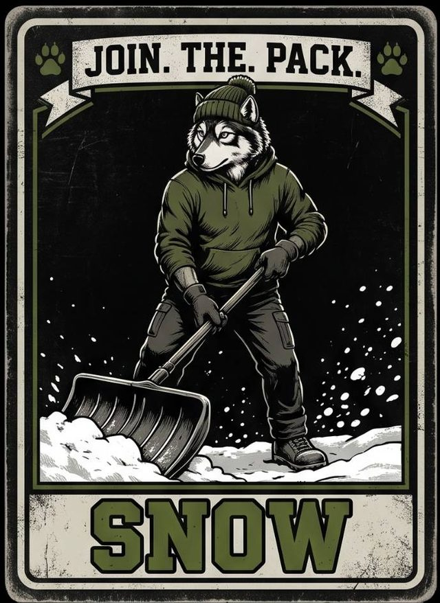

Únase a la manada
Wolf's Landscaping Services es un negocio dirigido por su dueño y siempre nos da gusto saber de personas trabajadoras en el área de Royersford y el condado de Chester.

Un buen trabajo requiere un buen equipo. Hacemos céspedes, hardscaping, árboles y nieve, y las personas en nuestros trabajos son lo que hace que todo se vea bien.
Si le enorgullece hacer bien su trabajo y llegar cuando dice que va a llegar, queremos saber de usted. Díganos qué tipo de trabajo le interesa.
Lo que buscamos
- Llega a tiempo y listo para trabajar
- Se enorgullece de un trabajo limpio y terminado
- Trabaja con seguridad y cuida al equipo
- Es amable y directo con los clientes
Cómo aplicar
Llámenos o envíenos un mensaje con su nombre, el tipo de trabajo que le interesa y su experiencia. ¿No tiene experiencia con alguna herramienta o trabajo? Dígalo y pregunte.
Dónde podría encajar




Esta página es sobre trabajar con nuestro equipo. Para una cotización gratis en su propiedad, use la página de contacto. Solicitar cotización gratis